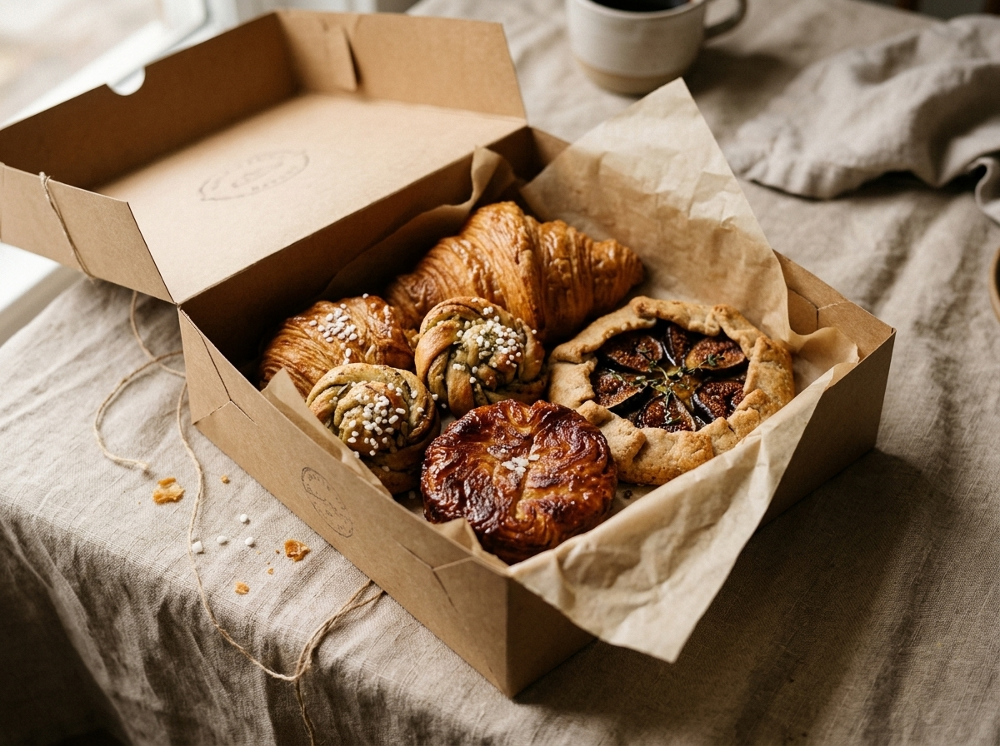

CRUMBERRY is a neighborhood bakehouse built around fresh-milled regional grain,
patient cold fermentation, and the simple warmth of sharing pastry straight off the cooling rack.
Who We Are
What is CRUMBERRY About?
From our very first loaf to thousands of custom birthday cakes, every bake at CRUMBERRY
is made from scratch with real ingredients and genuine care. Here's a little about us.
Our Flavours
We craft over 20+ signature flavours across our menu — from flaky cultured-butter
croissants and honey-fig galettes to rich chocolate ganache cakes, salted caramel cupcakes,
cranberry scones, and Swedish cardamom knots. Every season brings new specials.
Croissants & Pastries
Custom Birthday Cakes
Cookies & Cupcakes
Seasonal Galettes
Artisan Loaves
Our Journey
CRUMBERRY started in 2019 from a small home kitchen with a cedar folding table
and a dream. What began as weekend porch bread sales has grown into a beloved neighbourhood
bakery. Every year we have grown, refined our recipes, and built lasting bonds with our community.
5+
Years Baking
2019
Est. Year
3
Master Bakers
Orders & Milestones
Since opening our doors, CRUMBERRY has fulfilled over 12,000 orders — from
single morning croissants grabbed on the way to work, to elaborate multi-tier wedding cakes
and birthday orders shipped across the city. Each one is baked fresh, never frozen.
12k+
Total Orders
800+
Custom Cakes
98%
Happy Customers
Where It Began
From a Saturday porch bread table to Hearthstone Lane.
In the autumn of 2019, founder Maren Lindqvist began baking twenty sourdough boules and two
sheet pans of cardamom knots out of a borrowed commissary kitchen each Friday night, setting
up a cedar folding table on her front porch every Saturday at 8:00 AM. Neighbors queued down
the sidewalk before the loaves had even finished crackling.
Two years later, together with boulanger Sébastien Moreau, we fired up our twin-deck stone
ovens at 418 Hearthstone Lane. Today, our team still mixes every batch in small wooden tubs,
mills grain in-house each week, and bakes to the rhythm of local harvests—never taking a
shortcut that costs a pastry its aroma or shatter.
“Great viennoiserie asks for two things you cannot rush: cold butter that stays patient, and flour milled close enough to smell the field.”

Morning pastries fresh from the 7:00 AM bake at 418 Hearthstone Lane.
How We Bake
Three Steps of Slow Fermentation & Stone-Milled Flour
Every loaf and laminated pastry travels through a deliberate three-day cycle designed for
depth of flavor, tender crumb, and crisp caramelization.
We partner with Willamette Valley family farms for organic red fife, heritage spelt, and
dark rye. Milling berries slowly between granite stones keeps temperatures low, preserving
sweet wheat-germ oils and warm toasted-nut aromatics.
100% regional grain · Milled in-house within 7 days of bake
02Wild Starter
72-Hour Cold Fermentation
Fed twice daily with stone-ground rye and warm water, our wild levain drives both our
country loaves and laminated doughs. Three full days of cold rest develop natural lactic
sweetness, open honeycomb structure, and gentle digestibility.
We lock slabs of 84% butterfat cultured butter into chilled dough for 27 delicate layers,
then bake directly on steam-injected stone decks starting at 4:30 AM until every crust is
deeply blistered and honey-gold.
84% cultured butterfat · Fresh batches at 7:00 & 10:30 AM
Behind the Bench
Meet the Bakers
Our morning crew arrives while Hearthstone Lane is still quiet, shaping dough by hand and
greeting neighbors with warm coffee as the sun comes up.
ML
Maren Lindqvist
Founder & Head Viennoiserie Baker
Trained in Copenhagen and Lyon for over a decade before returning to Oregon, Maren oversees
butter lamination, seasonal fruit galettes, and our 72-hour croissant schedule.
Bench favorite: Salted Brown-Butter Kouign-Amann warm at 7:15 AM.
SM
Sébastien Moreau
Head Boulanger & Grain Miller
Sébastien tends our eight-year-old mother starter, calibrates our granite stone mill each
Monday, and manages hydration and steam curves for our country levain and spelt boules.
Bench favorite: Country Heritage Levain with cultured butter & flaky salt.
ER
Elena Rostova
Pastry Chef & Morning Counter Lead
Elena crafts our freshly ground cardamom fillings, roasted almond frangipanes, and custom
celebration tarts while curating morning espresso and pour-over pairings at the bar.
Bench favorite: Swedish Cardamom Knot alongside an oat cortado.
Plan Your Visit
Bakery Hours & Location
Stop by for a warm morning pastry at our window bar, pick up a whole loaf for dinner, or
pre-order boxes ahead for your weekend table.
Counter Hours
Tuesday – Friday7:00 AM – 3:00 PM
Saturday – Sunday7:30 AM – 4:00 PM
MondayClosed (Milling & Starter Care)
Find Us
CRUMBERRY Bakehouse
418 Hearthstone Lane, Portland, OR 97209
Corner of Hearthstone & NW 11th Ave · Step-free entrance & bike racks